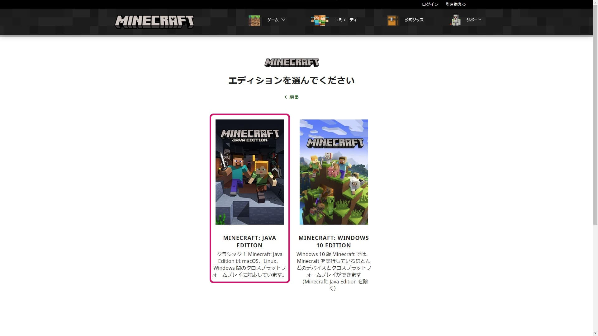
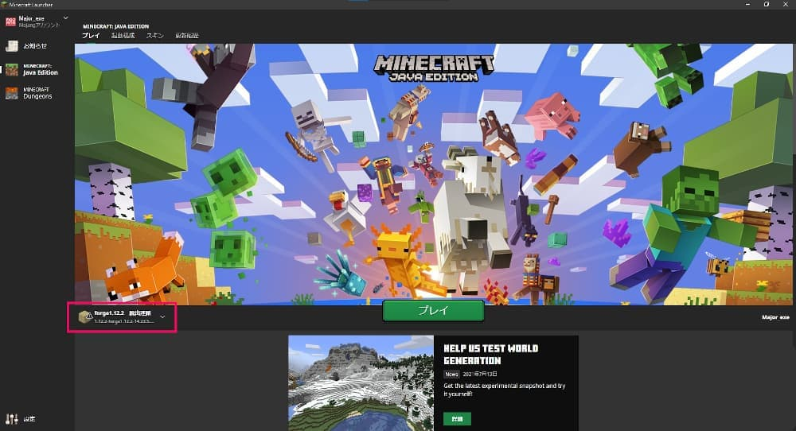
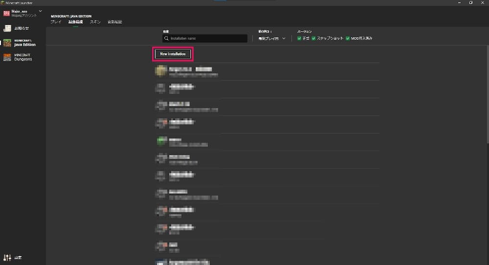
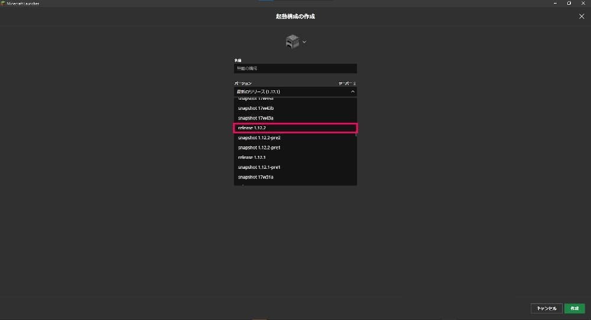
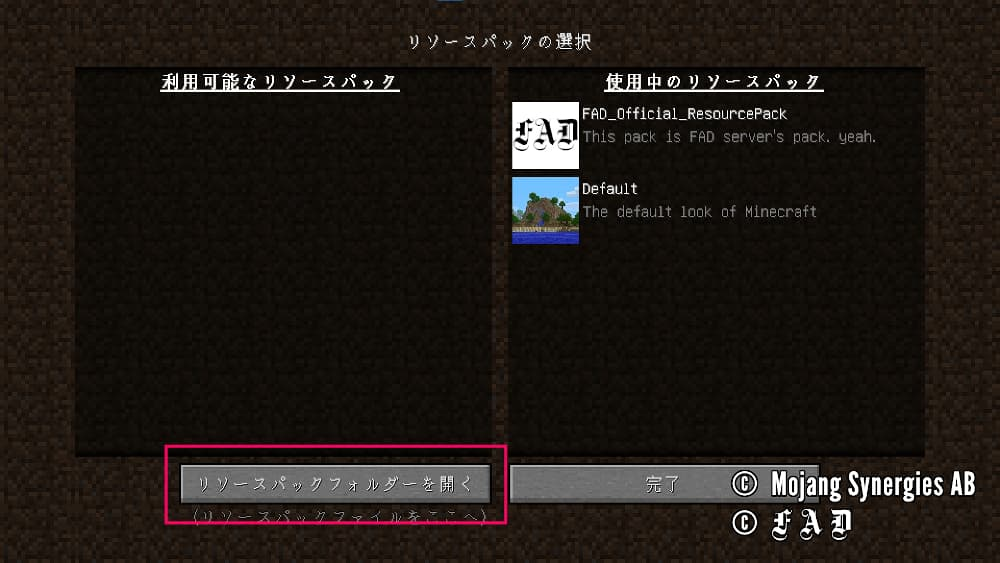
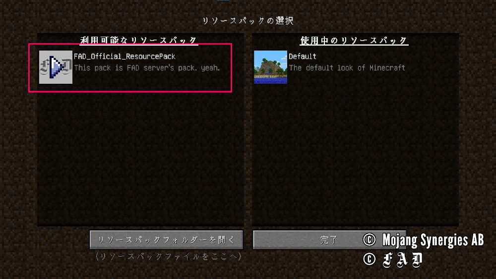

参加方法
2021.8.7
2021.12.15
01マインクラフトのダウンロード
-
マインクラフト Java Edition を購入しましょう！
Minecraft公式サイトへとんで 「MINECRAFT を購入」をクリック。
Minecraft 公式サイトTOP
-
「パソコン版」を選ぶ。
FADサーバーはパソコン版のJava Editionでのみ参加できます。
購入時に間違わないように注意してください。
デバイス選択画面
-
自分の使っているOSを選択する。

OS選択画面
-
「MINECRAFT:JAVA EDITION」を選択する。絶対、「MINECRAFT:JAVA EDITION」を選択する。
ここで「MINECRAFT:WINDOWS 10 EDITION」を購入するとFADサーバーでは遊べません。
Edition選択画面
-
「MINECRAFT を購入」をクリックして、あとは画面の指示に従って購入する。

購入画面
02FADサーバーに入る
-
赤四角の部分をクリック

ランチャーTOP
-
「New Installation」をクリック

ゲームディレクトリ選択画面
-
「バージョン」をクリック

設定画面
-
「release 1.12.2」をクリックし、「作成」をクリック

バージョン選択画面
-
「プレイ」をクリック

ランチャーTOP
-
「マルチプレイ」をクリック

Minecraft TOP
-
「サーバーを追加」をクリック

マルチプレイで遊ぶ
-
「サーバーアドレス」に「FAD.f5.si」を入力し、「完了」をクリック
サーバー情報の編集画面
-
「Minecraft サーバー」をクリックして参加する。
FADサーバー利用規約をご確認ください。
マルチプレイで遊ぶ
サーバーアドレスは「FAD.f5.si」
まだMinecraftを持っていない方は、01. マインクラフトのダウンロードから見てください。
重大な脆弱性が確認されました。Log4jの脆弱性についてをご確認ください。
03リソースパックのダウンロードと追加
-
下のボタンからリソースパックをダウンロードします。
リソースパック利用規約をご確認の上適用してください。 -
「設定...」をクリック

Minecraft トップ
-
「リソースパック...」をクリック

設定画面
-
「リソースパックフォルダーを開く」をクリックし、開いたフォルダの中に先ほどダウンロードしたリソースパックを入れる。

リソースパックの選択画面
-
FAD_Official_ResourcePackにカーソルを合わせて「」をクリックしてリソースパックを適用させる。

リソースパックの選択画面